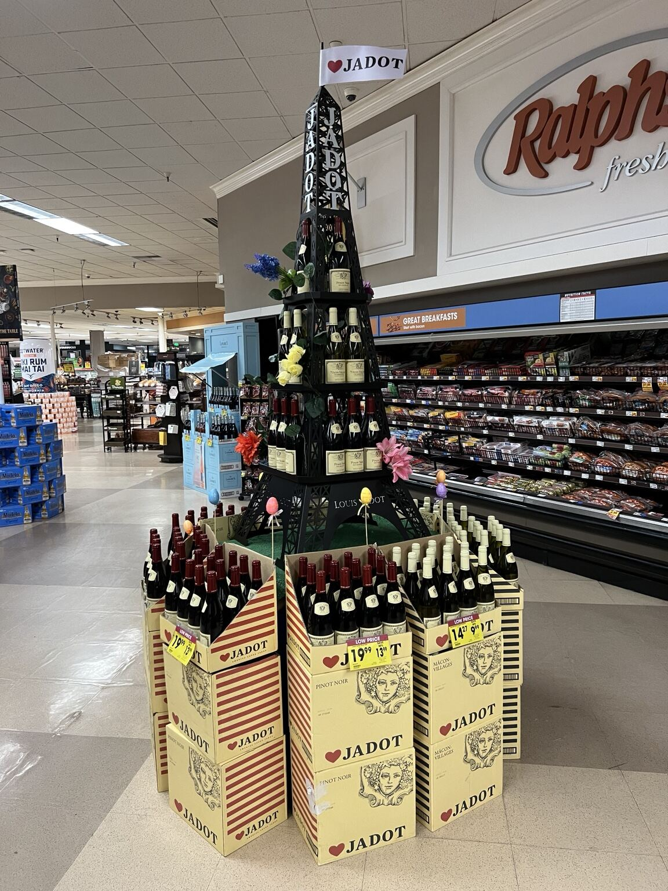
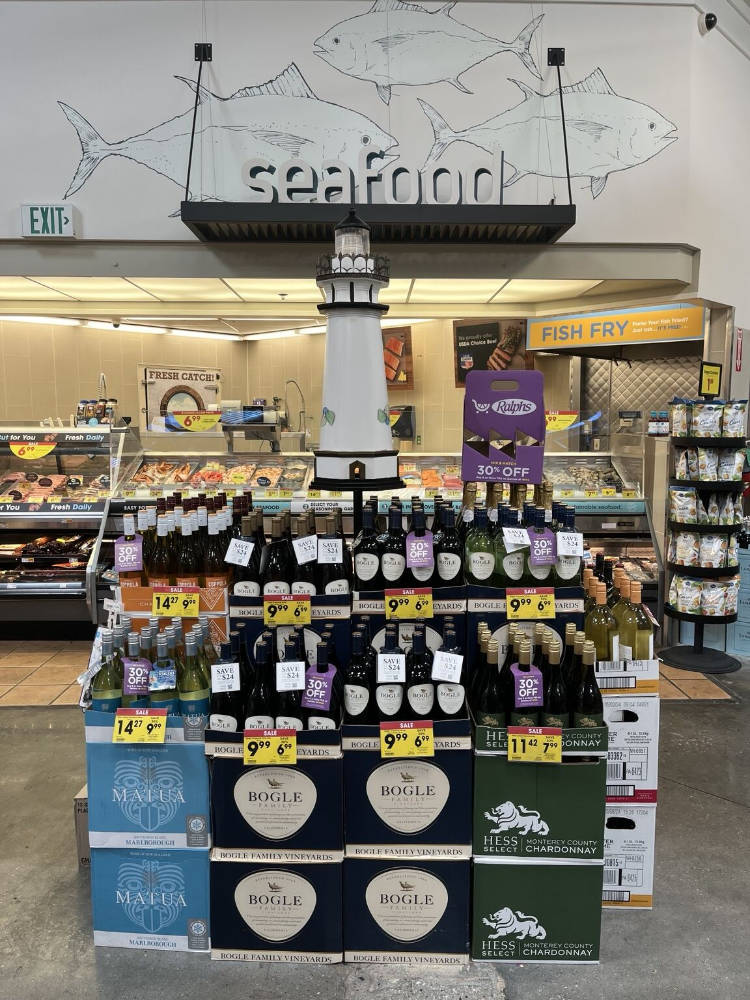
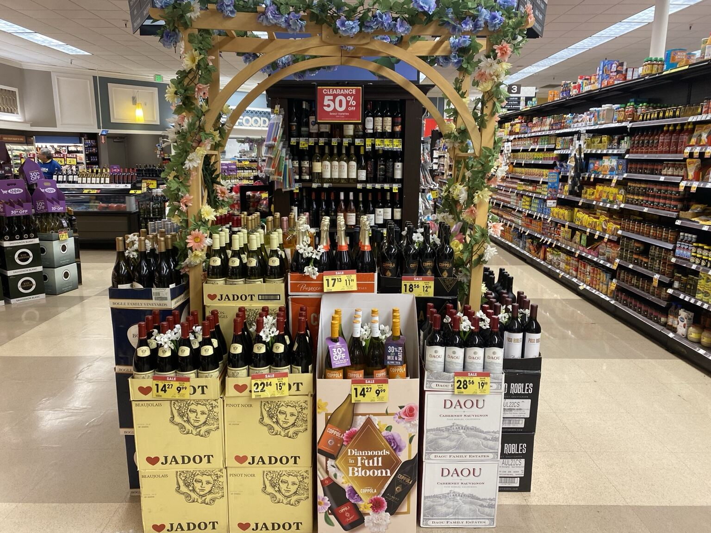
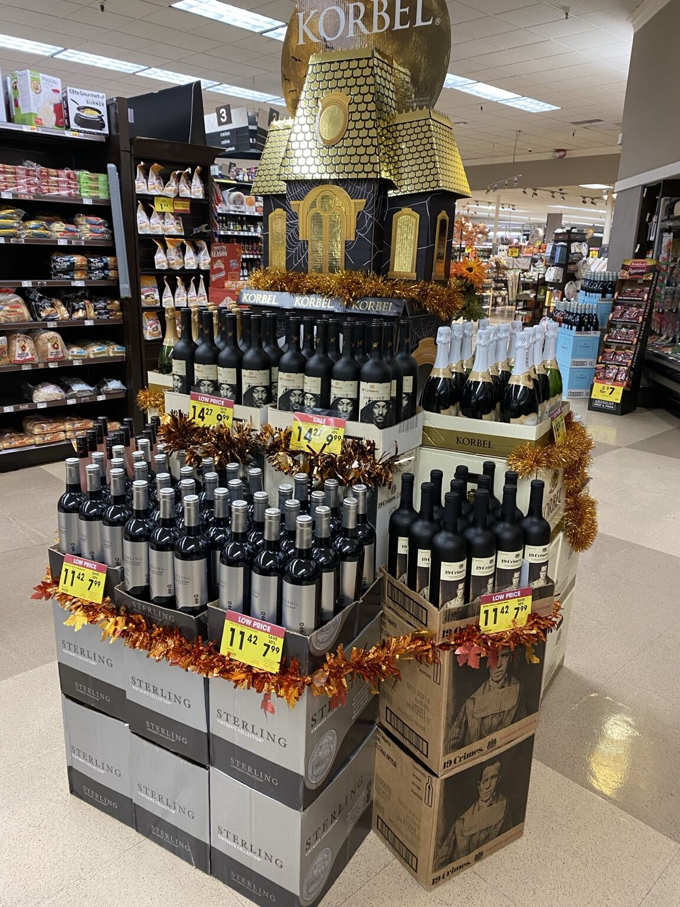
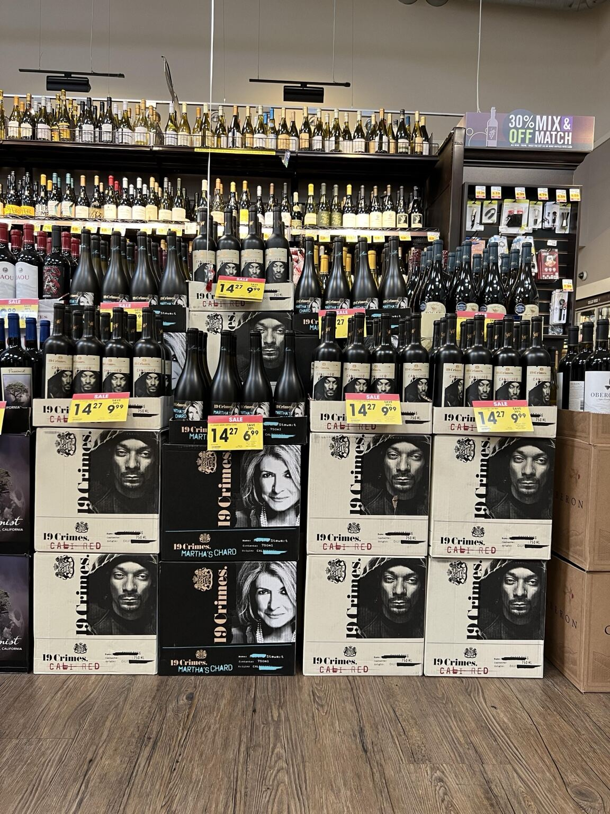
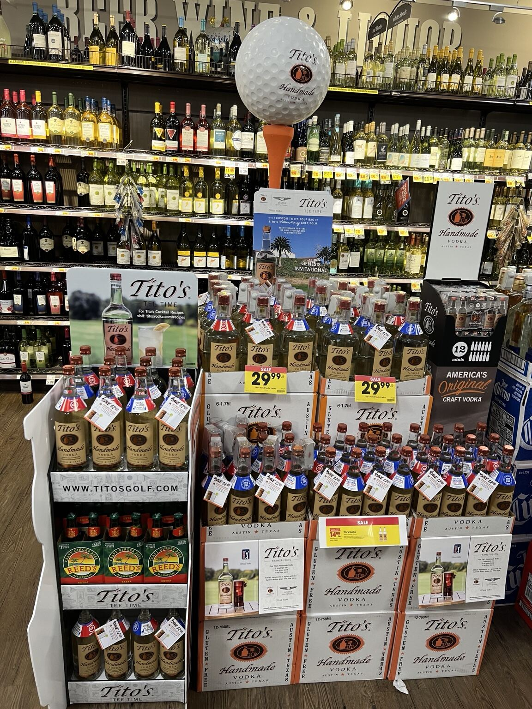
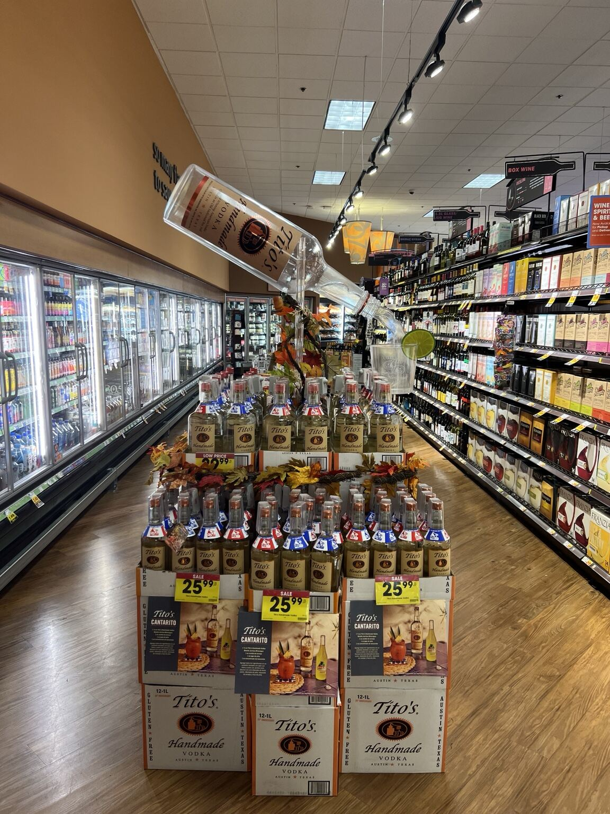
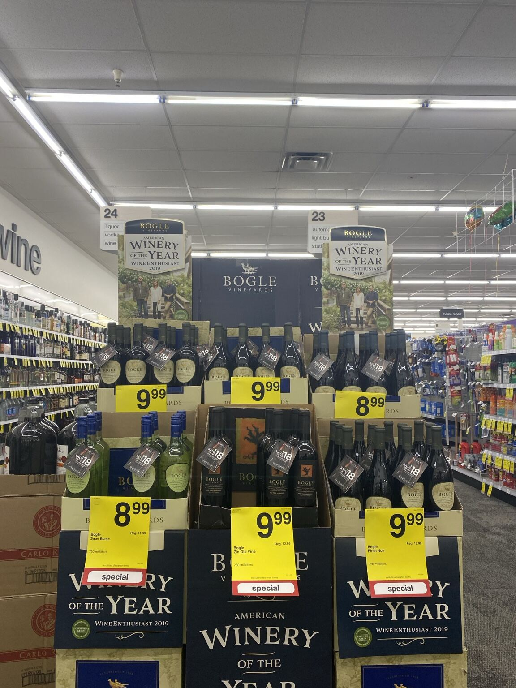
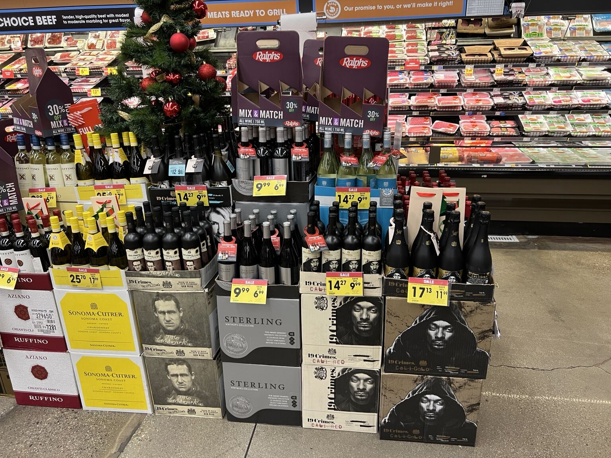
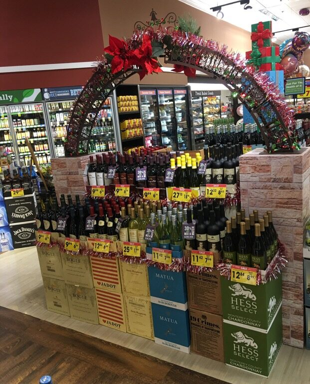

Territory planning
Prioritize routes, account needs, promotional windows, and in-store work across multiple territories.
Eight-plus years managing beverage-sales priorities across Ventura and Los Angeles Counties: retail relationships, route planning, distributor coordination, promotional execution, display building, brand visibility, and disciplined reporting.

The work goes beyond stacking cases. A successful feature connects the sales program, available inventory, store traffic, placement, pricing, brand standards, account relationships, safety, and a clean finished presentation.
Prioritize routes, account needs, promotional windows, and in-store work across multiple territories.
Build productive rapport with store managers, account personnel, distributor representatives, and internal teams.
Translate promotional direction into visible, shoppable, accurately signed account-level execution.
Use case mass, vertical structure, blocking, signage, and seasonal context to create stopping power.
Adapt the build to real floor space, available materials, inventory, account conditions, and changing priorities.
Document daily activity, account conditions, execution priorities, and operational challenges for management review.
Photographs from Brian Olsen’s alcohol-beverage territory work. Together they demonstrate high-volume case handling, multi-brand coordination, promotional signage, seasonal activation, custom focal elements, and presentation across different store environments.

Multiple brands, varietals, price points, case stacks, and promotional tags organized into a balanced feature that uses the existing lighthouse and seafood location to create visual relevance.

Cross-brand wine presentation with a clear seasonal story, strong color rhythm, accessible sale pricing, and substantial shoppable inventory.

Vertical brand theatre supported by stable case construction, surrounding product mass, visible promotional pricing, and seasonal finishing.

A high-density execution using recognizable case graphics, multiple SKUs, repeated facings, and prominent price cards to dominate the visual field without losing shopability.

Brand storytelling connects full-size bottles, minis, cocktail messaging, case inventory, promotional tags, and a memorable golf-themed focal element.

A clear cocktail occasion communicated through product mass, recipe signage, fall accents, clean pricing, and an overhead bottle-and-glass visual that stops traffic.

Multiple varietals presented as one coherent brand block with repeated neck tags, large price communication, and award messaging.

A multi-brand holiday cluster with promotion headers, coordinated case mass, accurate price callouts, and strong placement beside a high-traffic department.

Compact but high-volume assortment organized beneath existing seasonal décor, with brand variety, clear promotional tags, and accessible customer flow.
This evidence aligns with the operating core of an off-premise Market Development Representative role: support distribution and volume priorities, lead in-store execution, build brands, coordinate with retail and distributor partners, and track the work.
Plan the territory. Earn the placement. Execute the program. Document the result. Protect the relationship.
Brian’s background combines independent field ownership with the practical account-level work required to turn promotional direction into finished retail execution.